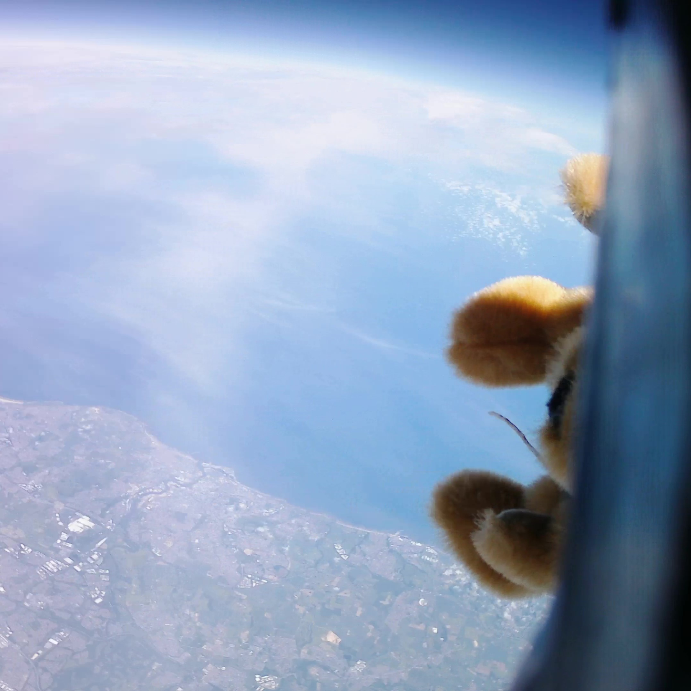
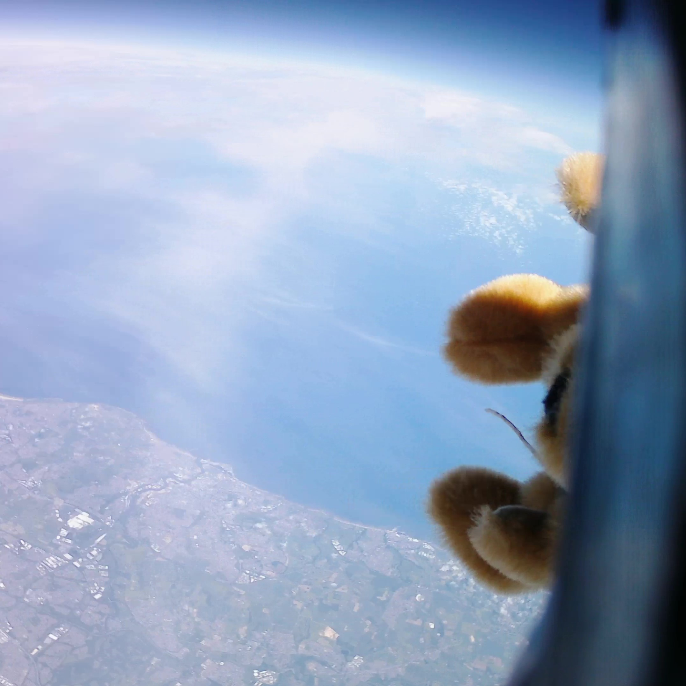

Aether I: Highlights
 

In June 2020, DUSF successfully launched a high-altitude balloon to the edge of space. The balloon was equipped with a teddy bear pilot, two cameras and solar tracker. It steadily rose to an estimated altitude of 19km capturing some incredible images of the Northwest of England and beautiful shots of the horizon with the familiar blue haze that dissipates to the darkness of space.
Our team worked remotely over the course of the year to research, design and build the balloon payload. Once it became possible to meet in-person, the modular components were assembled to complete the payload. The balloon was inflated with helium at the Physics Department and then launched from Mountjoy Hill on the Science Site. After a flight time of 88 minutes, the payload landed south of Consett, a town just outside of the North Pennines around 19 miles from Durham. All equipment used was then successfully recovered by the team.
This flight was tracked using a solar Iridium beacon that relayed GPS data and sensor readings to us via the Iridium satellite constellation. This allowed us to follow the balloon in real-time and find it after it had landed. Due to some anomoly mid-flight, the beacon failed to transmit ~10 sequential messages so the maximum altitude reached had to be calculated using predictions from the acquired data and compared to the footage captured.
The next flight, Aether II, is scheduled for launch in October 2021 and aims to bring improvements to all aspects of the payload. Two additional trackers with data-loggers will be used and an attempt will be made to release the teddy bear on a skydive from the edge of space!